Simulation Example from Grabowski (2024) Walkthrough
Mark Grabowski
2025-10-14
Simulation-Example.RmdThis is the Simulation Example from Grabowski (in press). In this example, we will simulate data for a model where Y adapts to four different optima that are influenced by the predictor trait X, and each optima has a different scaling relationship with X. Below, data is simulated following the multi-optima adaptive generative model, and then Blouch uses the multilevel multi-optima adaptive model with varying effects (varying intercepts and varying slopes) and the non-multilevel version of the same model to estimate the known parameter values.
Setup
Blouch uses RStan to implement Stan. The following code enables some compiler optimizations to improve the estimation speed of the model, and is taken from: https://github.com/stan-dev/rstan/wiki/RStan-Getting-Started
#options(mc.cores = parallel::detectCores())
options(mc.cores = 2) #2 For R package checks - use line above on your own machine
rstan::rstan_options(auto_write = TRUE)
dotR <- file.path(Sys.getenv("HOME"), ".R")
if (!file.exists(dotR)) dir.create(dotR)
M <- file.path(dotR, "Makevars")
if (!file.exists(M)) file.create(M)
arch <- ifelse(R.version$arch == "aarch64", "arm64", "x86_64")
cat(paste("\nCXX14FLAGS += -O3 -mtune=native -arch", arch, "-ftemplate-depth-256"),
file = M, sep = "\n", append = FALSE)The Blouch package includes the primate phylogeny from the 10KTrees Project (Arnold et al. 2010), which is used for various simulations and comes from https://10ktrees.nunn-lab.org/. This is Version 3 of their primate phylogeny with 301 tips. Here we randomly reduce the tip number to 100 for a more manageable tree using functions from the ape R package (Paradis et al. 2004). Note that the set.seed R function below is used to make the generated X an Y data repeatable (i.e. the data generated in R), but this step does not lead to repeatability for the MCMC sampling. Hence there will be some small differences between the parameter estimates and published results.
#Four regimes with one adaptive trait and multiple slopes per optima but single alpha parameter
set.seed(10) #Set sequence of random numbers for reproducability
N<-100 #Number of species
phy <- ape::keep.tip(tree.10K,sample(tree.10K$tip.label)[1:N])
phy<-ape::multi2di(phy) #Collapse or resolve multichotomies in phylogenetic trees.
l.tree<-max(ape::branching.times(phy)) ## Rescale tree to height 1
phy$edge.length<-phy$edge.length/l.tree Lets plot the tree with nodes labeled - these will be where we will be placing our regime shifts in the next step. We will use nodes 164, 192, and 104, which results in 4 regimes - the shifts+the root regime.
#Set regimes - manually - 4 regimes
#Locate nodes
plot(phy,no.margin=TRUE,edge.width=2,cex=0.7)
ape::nodelabels(frame="none",adj=c(1.1,-0.4))
ape::tiplabels()Combine data and tree and paint regimes on tree.
Next we will use the treeplyr package (Uyeda and Harmon, 2014) make.treedata function to combine the data and tree based on the taxa names. See https://github.com/uyedaj/treeplyr for more on this package. This step is basically to make a dummy trdata object containing the tree and a blank “dat” dataset object.
Then we will place the regime shifts on the tree that were identified earlier using Blouch’s set.converge.regimes R function. This function also produces a plot of the tree with the colored regimes. In addition, we will manually plot the tree with the shifts colored to make sure we have done everything correctly.
trdata<-data.frame(phy$tip.label)
trdata<-treeplyr::make.treedata(phy,trdata)
shifts<-c(164,192,104) #Location of nodes with regime shifts #100 species
trdata<-set.converge.regimes(trdata,shifts)
#> [1] 1
#> [1] 2
#> [1] 3
#> [1] OU1 OU1 OU4 OU4 OU4 OU4 OU4 OU4 OU4 OU4 OU4 OU4 OU4 OU4 OU4 OU4 OU4 OU4
#> [19] OU4 OU4 OU4 OU4 OU4 OU4 OU4 OU4 OU4 OU4 OU4 OU4 OU4 OU4 OU4 OU4 OU4 OU4
#> [37] OU4 OU4 OU4 OU4 OU4 OU4 OU4 OU4 OU4 OU4 OU4 OU4 OU4 OU4 OU4 OU4 OU4 OU4
#> [55] OU4 OU4 OU4 OU4 OU4 OU4 OU4 OU4 OU4 OU4 OU4 OU4 OU4 OU4 OU4 OU4 OU4 OU4
#> [73] OU4 OU4 OU4 OU4 OU4 OU4 OU4 OU4 OU4 OU4 OU4 OU1 OU1 OU1 OU1 OU1 OU1 OU1
#> [91] OU1 OU1 OU1 OU1 OU1 OU1 OU1 OU1 OU1 OU1 OU1 OU1 OU1 OU1 OU1 OU1 OU1 OU1
#> [109] OU1 OU1 OU1 OU1 OU1 OU1 OU1 OU1 OU1 OU1 OU1 OU1 OU1 OU1 OU1 OU1 OU1 OU2
#> [127] OU2 OU2 OU2 OU2 OU2 OU2 OU2 OU2 OU2 OU2 OU2 OU2 OU2 OU2 OU2 OU2 OU2 OU2
#> [145] OU2 OU2 OU2 OU2 OU2 OU2 OU2 OU2 OU2 OU2 OU2 OU2 OU2 OU2 OU2 OU2 OU2 OU2
#> [163] OU2 OU2 OU2 OU2 OU2 OU2 OU2 OU2 OU2 OU2 OU2 OU2 OU2 OU2 OU2 OU2 OU2 OU2
#> [181] OU2 OU3 OU3 OU3 OU3 OU3 OU3 OU3 OU3 OU3 OU3 OU3 OU3 OU3 OU3 OU3 OU3 OU3
#> Levels: OU1 OU2 OU3 OU4
#> [1] "#E64B35FF" "#4DBBD5FF" "#00A087FF" "#3C5488FF"
#Check if code worked
shifts.total<-c(trdata$dat$regimes,trdata$phy$node.label)
edge.regimes <- factor(shifts.total[trdata$phy$edge[,2]])
reg.colors<-ggsci::pal_npg(palette=c("nrc"),alpha=1)(4)
print(reg.colors)
#> [1] "#E64B35FF" "#4DBBD5FF" "#00A087FF" "#3C5488FF"
#plot(trdata$phy,edge.color = reg.colors[edge.regimes], edge.width = 1,show.tip.label=FALSE)
plot(trdata$phy,edge.color = reg.colors[edge.regimes], edge.width = 1,show.tip.label=FALSE)
#FigS1a.plot<-recordPlot()
#pdf("/Users/markgrabowski/Documents/Academic/Research/Current Projects/Blouch Project - SBR2/Blouch ms/R2/Figures/FigS1a.pdf", width=5, height=7 )
plot(trdata$phy,edge.color = reg.colors[edge.regimes], edge.width = 1,show.tip.label=FALSE)
#dev.off()
reg_tips<-trdata$dat$regimes
reg_tips<-as.numeric(as.factor(reg_tips))Get info on phylogeny
Next we will build a regimes object that will include both internal node and tip regimes, and use Blouch’s lineage.constructor R function to trace lineages from the tips to the root and determine the regime at each node - this R function is built into Blouch and it uses it internally given an empirical dataset, but here we use the function as part of our data simulation.
regimes_internal <-trdata$phy$node.label #Get internal regimes at nodes
regimes_tip <- trdata$dat$regimes #Get regimes at tips
regimes <- concat.factor(regimes_tip, regimes_internal) #Combine these into a list
anc_maps<-"regimes" #Type of regime placement - currently only at nodes
lineages <- lapply(1:N, function(e) lineage.constructor(trdata$phy, e, anc_maps, regimes)) #Trace lineage from tips (n) to root and determine regimes of each node or branchSet true/known parameter values
Next we set our true/known parameter values. These are for the half-life (hl), and stationary variance (vy), which in our simulation we translate to (a) and (sigma2_y). We set the ancestral value at the root (vX0) to 0, and the instantaneous variance of the BM process (Sxx) to to 10.
Simulate X data
We first simulate the X data following a Brownian-Motion Process using the fastBM function from the phytools package (Revell 2011) and the parameter values set above. We then plot the values using the phenogram function from the same package to make sure things look as they should.
#X<-phytools::fastBM(phy,a=vX0,sig2=sigma2_x[1,1],internal=FALSE) #Simulate X BM variable on tree, with BM scaling 10
X<-phytools::fastBM(phy,a=vX0,sig2=sigma2_x[1,1],internal=FALSE) #Simulate X BM variable on tree, with BM scaling 10
names(X)<-phy$tip.label
phytools::phenogram(phy,X,spread.labels=TRUE,spread.cost=c(1,0)) #Plot X data
#> Optimizing the positions of the tip labels...Simulate Y data
Next we need to simulate the Y data - we are using four different optima (intercepts) with four different slopes. We use the R function weight.matrix, which Blouch includes to produce the optima_matrix object, which has the weighting for each lineage based on the amount of time spent in each regime (see Hansen 1997 for derivation). This is followed by using the R function calc_adaptive_dmX from Blouch, which calculates the design matrix where the observed predictor X variables for each species are multiplied by the the phylogenetic correction factor, following Hansen et al. (2008), and these values are stored in the object pred_X.
We set values for our optima/intercepts (optima) and slopes (beta), and then use a linear model to construct a deterministic relationship between our set parameter values and mu, a vector of mean values for each species in our analysis.
optima_matrix<-weight.matrix(trdata$phy, a, lineages) #Calculate optima/intercepts matrix
pred_X<-calc_adaptive_dmX(phy,a,X) #Calculate design matrix
optima<-c(1,2,3,4) #Simulated optima/intercepts
beta<-c(0.75,0.5,0.35,0.25) #Simulated slopes
mu<-matrix(NA,N,1)
for(i in 1:N){ #Generative function to produce average Y values for each combination of optima/intercepts and slopes following Blouch approach
mu[i] = optima_matrix[i,]%*%optima+beta[reg_tips[i]]%*%pred_X[i]
}Calculating V
From there we will construct a variance/covariance matrix (V) based on our previously set parameter values and the Blouch R function calc_adaptive_V, following Hansen et al. (2008). Finally we sill simulate Y values based on our mean vector mu and our covariance matrix V.
n_reg<-length(unique(regimes)) #Count number of regimes
Z_adaptive<-1 #Number of adaptive X traits
V<-calc_adaptive_V(phy,a, sigma2_y, beta, sigma2_x, Z_adaptive) #Calculate V based on set values
Y<-MASS::mvrnorm(n=1,mu,V) #Simulate Y variables centered on mu with covariariance matrix V Let’s make a simple plot of data, and look at a simple ordinary least squares regression of Y on X. The intercept and slope values will give us an idea of how to center our priors below.
df<-data.frame(Y=Y,X=X)
ggplot2::ggplot(data=df,ggplot2::aes(x=X,y=Y))+
ggplot2::geom_point()
summary(lm(Y~X,df))
#>
#> Call:
#> lm(formula = Y ~ X, data = df)
#>
#> Residuals:
#> Min 1Q Median 3Q Max
#> -2.6787 -0.9310 -0.2816 1.1371 1.7977
#>
#> Coefficients:
#> Estimate Std. Error t value Pr(>|t|)
#> (Intercept) 2.8006 0.1254 22.339 <2e-16 ***
#> X 0.1544 0.1101 1.402 0.164
#> ---
#> Signif. codes: 0 '***' 0.001 '**' 0.01 '*' 0.05 '.' 0.1 ' ' 1
#>
#> Residual standard error: 1.1 on 98 degrees of freedom
#> Multiple R-squared: 0.01966, Adjusted R-squared: 0.009659
#> F-statistic: 1.966 on 1 and 98 DF, p-value: 0.1641Simulating measurement error
Next we will simulate measurement error - we will use a standard deviation of measurement error of 0.01, which we will provide to Blouch as a vector (X_error and Y_error), and use the rnorm function to add error to our X and Y variables. In other words, we are telling Blouch that the estimated error on X and Y is 0.01, and providing it with X and Y variables that are offset by a random amount of error with this standard deviation.
#Simulate errors
Z_X_error<-1 #Number of X traits with error
X_error<-matrix(0.01,nrow=N,ncol=Z_X_error)
X_error<-data.frame(X_error)
Y_error<-rep(0.01,N)
Y_with_error<-Y+rnorm(N,0,0.01) #Add ME to Y
X_with_error<-X+rnorm(N,0,0.01) #Add ME to XData setup for Blouch
The line below combines the existing trdata file from make.trdata which has regime info for the tips with the X and Y values and their errors.
#Make trdata file
trdata$dat<-cbind(trdata$dat,data.frame(cbind(Y_with_error,Y_error,X_with_error,X_error)))
First we will run the multilevel multi-optima adaptive model with varying effects. This will allow our intercepts (optima) and slopes to vary with the regimes. As a multilevel model, information can be shared across the regimes, which can produce more accurate parameter estimates.
Below are the priors used for this simulation. See Grabowski (in press) for more on setting these priors. To change these values requires you to open the Stan function, in this case blouchOU_reg_adapt_mlm_ve, and manually edit them. Unfortunately there is no way around this at present, but trust me - it will be worth
Exploring Priors
At this point one would want to explore if the priors are appropriate - do the prior distributions look consistent with what we know about our system? See Grabowski (in press) for more on setting priors.
Half-life Prior plot
hl.sims<-data.frame(rlnorm(n=1000,meanlog=hl.prior[1],sdlog=hl.prior[2]))
names(hl.sims)<-"prior.hl.sims"
hl.prior.plot<-ggplot2::ggplot()+
ggplot2::geom_density(ggplot2::aes(prior.hl.sims,fill="prior.hl.sims"),alpha=0.2,data=hl.sims)+
ggplot2::theme_bw()+
ggplot2::theme(
panel.grid.major = ggplot2::element_blank(),
panel.grid.minor = ggplot2::element_blank())+
#labs(title="Prior vs. Posterior Distribution ",x="Half-life", y = "Density")+
ggplot2::labs(title="",x="Half-life", y = "Density")+
#scale_fill_manual(labels=c("Posterior","Prior"))+
ggplot2::geom_vline(xintercept=c(hl),linetype=2)+
ggsci::scale_fill_npg(name="",labels=c("Prior"))
hl.prior.plotVy Prior Plot
vy.sims<-rexp(n=1000,rate=vy.prior)
vy.sims<-data.frame(vy.sims)
names(vy.sims)<-"prior.vy.sims"
vy.prior.plot<-ggplot2::ggplot()+
ggplot2::geom_density(ggplot2::aes(prior.vy.sims,fill="prior.vy.sims"),alpha=0.2,data=vy.sims)+
ggplot2::theme_bw()+
ggplot2::theme(
panel.grid.major = ggplot2::element_blank(),
panel.grid.minor = ggplot2::element_blank())+
#labs(title="Prior vs. Posterior Distribution ",x="vy", y = "Density")+
ggplot2::labs(title="",x="vy", y = "Density")+
ggplot2::geom_vline(xintercept=c(vy),linetype=2)+
#scale_fill_manual(labels=c("Posterior","Prior"))+
ggsci::scale_fill_npg(name="",labels=c("Prior"))
vy.prior.plot
beta.sims<-data.frame(rnorm(n=1000,beta.prior[1],beta.prior[2]))
a.sims<-log(2)/hl.sims
sigma2_y.sims<-vy.sims*(2*(log(2)/hl.sims))
mypal <- ggsci::pal_npg("nrc", alpha = 0.4)(2)
x<-seq(0,1,by=0.01)
df<-data.frame(x)
p<-ggplot2::ggplot(df,ggplot2::aes(x))
for(i in 1:30){
p<-p+ggplot2::stat_function(fun=function(x,i){calc_adaptive_cov_plot(a.sims[i,],sigma2_y.sims[i,],beta.sims[i,],x)},
args=list(i=i),alpha=0.2,lwd=2)
}
p<-p+ggplot2::theme_bw()+
ggplot2::theme(
panel.grid.major = ggplot2::element_blank(),
panel.grid.minor = ggplot2::element_blank())+
ggplot2::labs(title="",x="Time Since MRCA", y = "Covariance")
pExploring Priors
Lets check out our simulated data with reasonable values for the priors shown in light grey lines. These are the “.sims” values - the priors are based on the intercept and slope of the OLS regression above, with standard deviations set by visualizing the priors versus the data. See Grabowski (in press) for more on setting these priors.
optima.sims<-rnorm(100,optima.prior[1],optima.prior[2])
beta.sims<-rnorm(n=100,beta.prior[1],beta.prior[2])
df<-data.frame(Y=trdata$dat$Y_with_error,X=trdata$dat$X_with_error)
prior.slope.plot<-ggplot2::ggplot()+
ggplot2:: geom_point(data=df,ggplot2::aes(y=Y,x=X))+
ggplot2::geom_abline(intercept=optima.sims,slope=beta.sims,alpha=0.15)+
ggplot2::theme_bw()+
ggplot2::theme(
panel.grid.major = ggplot2::element_blank(),
panel.grid.minor = ggplot2::element_blank())+
ggplot2::ylab("Y") + ggplot2::xlab("Adaptive X")+
ggsci::scale_color_npg()
prior.slope.plot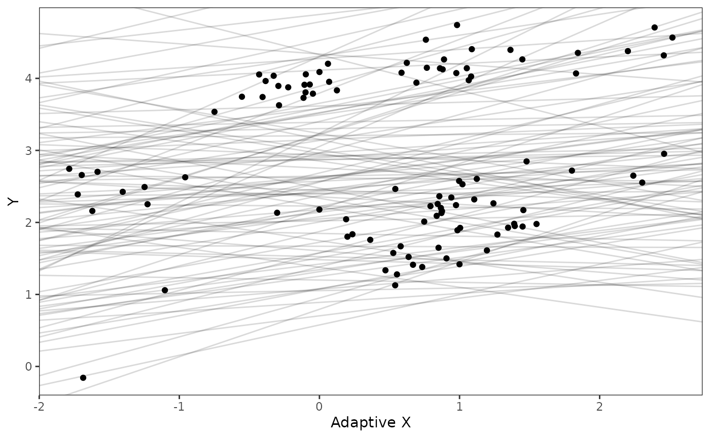
Explore Priors - built in functions
hl.prior.plot.code(hl.prior)
vy.prior.plot.code(vy.prior)
covariance.prior.direct.plot.code(hl.prior,vy.prior)
reg.adapt.prior.plot.code(trdata,optima.prior,beta.prior)We will use the helper function blouch.reg.adapt.prep() to setup the dat object for Stan. This function and the other helper functions included with Blouch require trdata files, and then the names of the columns that contain Y and (sometimes depending on the model) X data and error data. “Z_adaptive” is the number of predictors, with “regimes” the name of the column where the tip regime data is located. See help info for each function and other articles on github.com for functionality.
dat<-blouch.reg.adapt.mlm.prep(trdata,"Y_with_error","Y_error","X_with_error","X_error",Z_adaptive=1,"regimes",hl.prior,vy.prior,optima.prior,beta.prior,sigma.prior)Running models
Now let’s run the multi-level multi-optima adaptive model with varying effects (blouchOU_reg_adapt_mlm_ve below).
fit.reg.adapt.mlm.ve<- rstan::sampling(blouch:::stanmodels$blouchOU_reg_adapt_mlm_ve,data = dat,chains = 2,cores=2,iter =4000, control = list(adapt_delta = 0.95))
#> Warning: There were 1 divergent transitions after warmup. See
#> https://mc-stan.org/misc/warnings.html#divergent-transitions-after-warmup
#> to find out why this is a problem and how to eliminate them.
#> Warning: Examine the pairs() plot to diagnose sampling problemsStan prints out a lot of info, so lets just look at the parameter estimates here and store the posterior distribution for later use. In a real analysis we would explore the posterior distributions before fitting additional models, but I have done so previously.
print(fit.reg.adapt.mlm.ve,pars = c("hl","vy","optima_bar","beta_bar","Rho[1,2]","sigma","optima","beta"))
#> Inference for Stan model: blouchOU_reg_adapt_mlm_ve.
#> 2 chains, each with iter=4000; warmup=2000; thin=1;
#> post-warmup draws per chain=2000, total post-warmup draws=4000.
#>
#> mean se_mean sd 2.5% 25% 50% 75% 97.5% n_eff Rhat
#> hl 0.10 0.00 0.05 0.04 0.07 0.08 0.11 0.22 1386 1
#> vy 0.01 0.00 0.01 0.00 0.00 0.01 0.01 0.02 4968 1
#> optima_bar 2.56 0.01 0.53 1.49 2.21 2.55 2.89 3.62 4835 1
#> beta_bar[1] 0.32 0.00 0.16 -0.05 0.23 0.34 0.43 0.59 3225 1
#> Rho[1,2] -0.30 0.01 0.35 -0.86 -0.59 -0.35 -0.06 0.45 3045 1
#> sigma[1] 1.27 0.01 0.39 0.70 0.98 1.20 1.47 2.20 4809 1
#> sigma[2] 0.39 0.01 0.24 0.12 0.23 0.33 0.49 1.06 2343 1
#> optima[1] 1.04 0.00 0.12 0.80 0.96 1.03 1.11 1.28 4429 1
#> optima[2] 1.87 0.00 0.12 1.63 1.79 1.87 1.95 2.14 4665 1
#> optima[3] 2.66 0.01 0.28 2.08 2.48 2.67 2.85 3.17 2787 1
#> optima[4] 3.99 0.00 0.17 3.75 3.89 3.97 4.05 4.39 1579 1
#> beta[1,1] 0.73 0.00 0.07 0.59 0.69 0.73 0.78 0.88 3951 1
#> beta[2,1] 0.47 0.00 0.08 0.31 0.42 0.47 0.52 0.63 5855 1
#> beta[3,1] 0.13 0.00 0.20 -0.28 0.00 0.15 0.28 0.48 2433 1
#> beta[4,1] 0.27 0.00 0.06 0.16 0.23 0.27 0.31 0.40 4297 1
#>
#> Samples were drawn using NUTS(diag_e) at Tue Oct 14 21:37:44 2025.
#> For each parameter, n_eff is a crude measure of effective sample size,
#> and Rhat is the potential scale reduction factor on split chains (at
#> convergence, Rhat=1).
post.mlm.ve<-rstan::extract(fit.reg.adapt.mlm.ve) #Extract posterior distribution Now let’s run the non-multilevel version of the same model. We will compare these models in terms of their predictive performance below. The priors are the same but without the prior on sigma.
#Set Priors
hl.prior<-c(log(0.25),0.75)
vy.prior<-20
optima.prior<-c(2.8,1) #Informed by linear model
beta.prior<-c(0.16,0.25) #Informed by linear modelAnd a slightly different (non-mlm) helper function
dat<-blouch.reg.adapt.prep(trdata,"Y_with_error","Y_error","X_with_error","X_error",Z_adaptive=1,"regimes",hl.prior,vy.prior,optima.prior,beta.prior)Run the model
fit.reg.adapt.ve<- rstan::sampling(blouch:::stanmodels$blouchOU_reg_adapt_ve,data = dat,chains = 2,cores=2,iter =4000, control = list(adapt_delta = 0.95))Again we can also compare a few of the parameter estimates with the values we set earlier.
print(fit.reg.adapt.ve,pars = c("hl","vy","optima","beta"))
#> Inference for Stan model: blouchOU_reg_adapt_ve.
#> 2 chains, each with iter=4000; warmup=2000; thin=1;
#> post-warmup draws per chain=2000, total post-warmup draws=4000.
#>
#> mean se_mean sd 2.5% 25% 50% 75% 97.5% n_eff Rhat
#> hl 0.09 0 0.04 0.04 0.07 0.08 0.11 0.19 1779 1
#> vy 0.01 0 0.01 0.00 0.00 0.01 0.01 0.03 5293 1
#> optima[1] 1.05 0 0.11 0.84 0.98 1.05 1.12 1.29 5447 1
#> optima[2] 1.89 0 0.12 1.66 1.81 1.88 1.96 2.12 5498 1
#> optima[3] 2.59 0 0.25 2.10 2.43 2.59 2.75 3.07 5553 1
#> optima[4] 3.98 0 0.13 3.76 3.90 3.97 4.05 4.27 3239 1
#> beta[1,1] 0.72 0 0.07 0.59 0.67 0.72 0.76 0.84 5668 1
#> beta[2,1] 0.45 0 0.08 0.30 0.39 0.45 0.50 0.60 7130 1
#> beta[3,1] 0.08 0 0.17 -0.26 -0.03 0.08 0.20 0.43 5168 1
#> beta[4,1] 0.26 0 0.06 0.16 0.23 0.26 0.30 0.38 5485 1
#>
#> Samples were drawn using NUTS(diag_e) at Tue Oct 14 21:48:15 2025.
#> For each parameter, n_eff is a crude measure of effective sample size,
#> and Rhat is the potential scale reduction factor on split chains (at
#> convergence, Rhat=1).
post.ve<-rstan::extract(fit.reg.adapt.ve)#Extract posterior distribution Plotting posterior versus prior distributions
Great. We can see from the marginal likelihood tables that Blouch is fairly accurate at recovering our known parameter values. But a more effective way to look at the full estimated posterior distribution and compare it to the prior is to plot the results.
Lets use the non-multi-optima adaptive model with varying effects - the other model’s posteriors looks quite similar. For all plots the dotted line is the true values of the parameter.
First the half-life (hl):
post<-post.ve
#post<-post.mlm.ve
mypal <- ggsci::pal_npg("nrc", alpha = 0.4)(2)
mypal[2]<-palette()[1]
hl.sims<-data.frame(rlnorm(n=1000,meanlog=hl.prior[1],sdlog=hl.prior[2]))
names(hl.sims)<-"prior.hl.sims"
hl.post<-data.frame(post$hl) #Using this model's posterior
names(hl.post)<-"post.hl.sims"
df<-data.frame(cbind(hl.sims,hl.post))
hl.plot<-ggplot2::ggplot(data=df)+
ggplot2::geom_density(ggplot2::aes(prior.hl.sims, fill=mypal[2]),alpha=0.2)+
ggplot2::geom_density(ggplot2::aes(post.hl.sims, fill=mypal[1]),alpha=0.2)+
ggplot2::theme_bw()+
ggplot2::theme(
panel.grid.major = ggplot2::element_blank(),
panel.grid.minor = ggplot2::element_blank())+
ggplot2::labs(title="",x="Half-life", y = "Density")+
ggplot2::geom_vline(xintercept=c(hl),linetype=2)+
#ggsci::scale_fill_npg(name="",labels=c("Posterior","Prior"))
ggplot2::scale_fill_manual(values=mypal,name="",labels=c("Posterior","Prior"))
hl.plotNow the stationary variance parameter (Vy):
vy.sims<-rexp(n=1000,rate=vy.prior)
vy.sims<-data.frame(vy.sims)
names(vy.sims)<-"prior.vy.sims"
vy.post<-data.frame(post$vy)
names(vy.post)<-"post.vy.sims"
df<-data.frame(cbind(vy.sims,vy.post))
vy.plot<-ggplot2::ggplot(data=df)+
ggplot2::geom_density(ggplot2::aes(prior.vy.sims, fill=mypal[2]),alpha=0.2)+
ggplot2::geom_density(ggplot2::aes(post.vy.sims, fill=mypal[1]),alpha=0.2)+
ggplot2::theme_bw()+
ggplot2::theme(
panel.grid.major = ggplot2::element_blank(),
panel.grid.minor = ggplot2::element_blank())+
ggplot2::labs(title="",x="Vy", y = "Density")+
ggplot2::geom_vline(xintercept=c(vy),linetype=2)+
#ggsci::scale_fill_npg(name="",labels=c("Posterior","Prior"))
ggplot2::scale_fill_manual(values=mypal,name="",labels=c("Posterior","Prior"))
vy.plotNow lets plot the covariance as a function of distance from the tips - this gives an idea of the decay of covariance in the OU process. We will use Blouch’s R helper function, calc_multiadaptive_cov_plot.R to make these plots, which calculates the expected covariance for an adaptive model given values of alpha, sigma2_y, beta, and x, which is a sequence of values across the X axis.
hl.sims<-data.frame(rlnorm(n=1000,meanlog=hl.prior[1],sdlog=hl.prior[2]))
vy.sims<-rexp(n=1000,rate=vy.prior)
beta.cov.sims<-data.frame(rnorm(n=1000,beta.prior[1],beta.prior[2]))
a.sims<-log(2)/hl.sims
sigma2_y.sims<-vy.sims*(2*(log(2)/hl.sims))
#mypal <- ggsci::pal_npg("nrc", alpha = 0.4)(2)
x<-seq(0,1,by=0.01)
df<-data.frame(x)
covariance.plot<-ggplot2::ggplot(df,ggplot2::aes(x))
for(i in 1:30){
covariance.plot<-covariance.plot+ggplot2::stat_function(fun=function(x,i){calc_adaptive_cov_plot(a.sims[i,],sigma2_y.sims[i,],beta.cov.sims[i,],x)},
args=list(i=i),alpha=0.2,lwd=2)
covariance.plot<-covariance.plot+ggplot2::stat_function(fun=function(x,i){calc_adaptive_cov_plot(post$a[i],post$sigma2_y[i],post$beta[i],x)},
args=list(i=i),alpha=0.2,color=mypal[1],lwd=2)
}
covariance.plot<-covariance.plot+ggplot2::theme_bw()+
ggplot2::theme(
panel.grid.major = ggplot2::element_blank(),
panel.grid.minor = ggplot2::element_blank())+
ggplot2::labs(title="",x="Time Since MRCA", y = "Covariance")+
ggplot2::scale_color_manual(values=mypal,name="",labels=c("Posterior","Prior"))
covariance.plot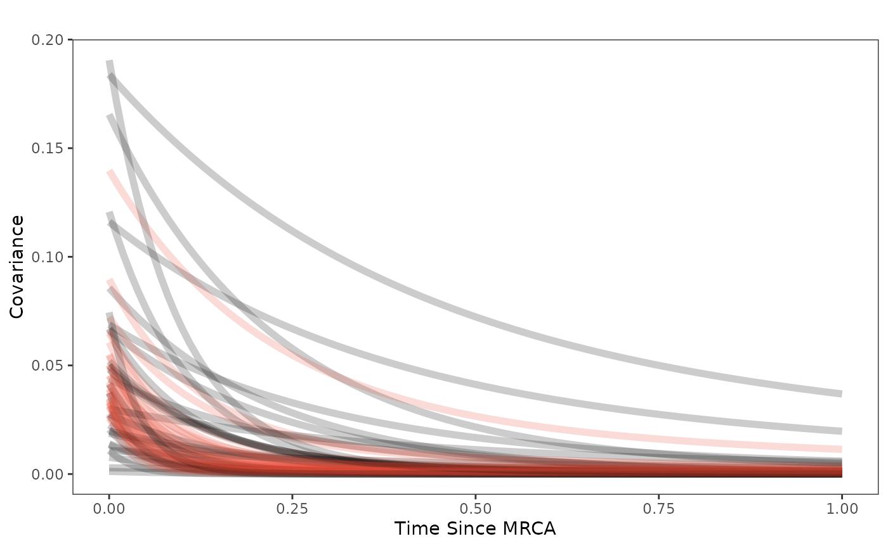
Finally lets plot the regression results - the posterior compared to the prior and the true values (dotted lines).
optima.sims<-rnorm(100,optima.prior[1],optima.prior[2])
beta.sims<-rnorm(n=100,beta.prior[1],beta.prior[2])
optima.post<-post$optima
beta.post<-data.frame(post$beta)
names(beta.post)<-c("post.beta.1","post.beta.2","post.beta.3","post.beta.4")
mu.link.11<-function(x.seq){optima.post[,1]+x.seq*beta.post[,1]}
mu.link.12<-function(x.seq){optima.post[,2]+x.seq*beta.post[,2]}
mu.link.21<-function(x.seq){optima.post[,3]+x.seq*beta.post[,3]}
mu.link.22<-function(x.seq){optima.post[,4]+x.seq*beta.post[,4]}
x.seq <- seq(from=min(X), to=max(X) , length.out=100)
mu.11 <- sapply(x.seq , mu.link.11 )
mu.12 <- sapply(x.seq , mu.link.12 )
mu.21 <- sapply(x.seq , mu.link.21 )
mu.22 <- sapply(x.seq , mu.link.22 )
mu.mean.11<-colMeans(mu.11)
mu.mean.12<-colMeans(mu.12)
mu.mean.21<-colMeans(mu.21)
mu.mean.22<-colMeans(mu.22)
mu.mean.11<-data.frame(as.numeric(mu.mean.11))
mu.mean.12<-data.frame(as.numeric(mu.mean.12))
names(mu.mean.11)<-"mu.mean.11"
names(mu.mean.12)<-"mu.mean.12"
mu.mean.21<-data.frame(as.numeric(mu.mean.21))
mu.mean.22<-data.frame(as.numeric(mu.mean.22))
names(mu.mean.21)<-"mu.mean.21"
names(mu.mean.22)<-"mu.mean.22"
mu.CI.11 <- apply( mu.11 , MARGIN=2, FUN=rethinking::PI , prob=0.89 )
mu.CI.12 <- apply( mu.12 , MARGIN=2, FUN=rethinking::PI , prob=0.89 )
mu.CI.11<-data.frame(t(data.frame(mu.CI.11)),x.seq)
mu.CI.12<-data.frame(t(data.frame(mu.CI.12)),x.seq)
mu.CI.21 <- apply( mu.21 , MARGIN=2, FUN=rethinking::PI , prob=0.89 )
mu.CI.22 <- apply( mu.22 , MARGIN=2, FUN=rethinking::PI , prob=0.89 )
mu.CI.21<-data.frame(t(data.frame(mu.CI.21)),x.seq)
mu.CI.22<-data.frame(t(data.frame(mu.CI.22)),x.seq)
names(mu.CI.11)<-c("min.5.5","max.94.5","x.seq")
names(mu.CI.12)<-c("min.5.5","max.94.5","x.seq")
names(mu.CI.21)<-c("min.5.5","max.94.5","x.seq")
names(mu.CI.22)<-c("min.5.5","max.94.5","x.seq")
df<-data.frame(Y=dat$Y_obs,X=dat$X_obs,Regimes=regimes_tip)
df11<-data.frame(x.seq,mu.mean.11)
df12<-data.frame(x.seq,mu.mean.12)
df21<-data.frame(x.seq,mu.mean.21)
df22<-data.frame(x.seq,mu.mean.22)
#mypal.reg <- ggsci::pal_npg("nrc", alpha = 0.7)(length(beta))
regression.plot<-ggplot2::ggplot()+
ggplot2::geom_point(data=df,ggplot2::aes(y=Y,x=X,color=Regimes))+
ggplot2::geom_abline(intercept=optima.sims,slope=beta.sims,alpha=0.1)+
ggplot2::geom_abline(intercept=optima[1],slope=beta[1],alpha=0.5,linetype=2)+
ggplot2::geom_abline(intercept=optima[2],slope=beta[2],alpha=0.5,linetype=2)+
ggplot2::geom_abline(intercept=optima[3],slope=beta[3],alpha=0.5,linetype=2)+
ggplot2::geom_abline(intercept=optima[4],slope=beta[4],alpha=0.5,linetype=2)+
ggplot2::geom_line(data=df11,ggplot2::aes(x=x.seq,y=mu.mean.11),linetype=1)+
ggplot2::geom_ribbon(data=mu.CI.11,ggplot2::aes(x=x.seq,ymin=min.5.5,ymax=max.94.5),linetype=2,alpha=0.2)+
ggplot2::geom_line(data=df12,ggplot2::aes(x=x.seq,y=mu.mean.12),linetype=1)+
ggplot2::geom_ribbon(data=mu.CI.12,ggplot2::aes(x=x.seq,ymin=min.5.5,ymax=max.94.5),linetype=2,alpha=0.2)+
ggplot2::geom_line(data=df21,ggplot2::aes(x=x.seq,y=mu.mean.21),linetype=1)+
ggplot2::geom_ribbon(data=mu.CI.21,ggplot2::aes(x=x.seq,ymin=min.5.5,ymax=max.94.5),linetype=2,alpha=0.2)+
ggplot2::geom_line(data=df22,ggplot2::aes(x=x.seq,y=mu.mean.22),linetype=1)+
ggplot2::geom_ribbon(data=mu.CI.22,ggplot2::aes(x=x.seq,ymin=min.5.5,ymax=max.94.5),linetype=2,alpha=0.2)+
ggplot2::theme_bw()+
ggplot2::theme(
panel.grid.major = ggplot2::element_blank(),
panel.grid.minor = ggplot2::element_blank())+
ggplot2::theme(
legend.margin = ggplot2::margin(6, 6, 6, 6)
)+
ggplot2::ylab("Y") + ggplot2::xlab("X - Adaptation Model")+
ggsci::scale_color_npg()
regression.plot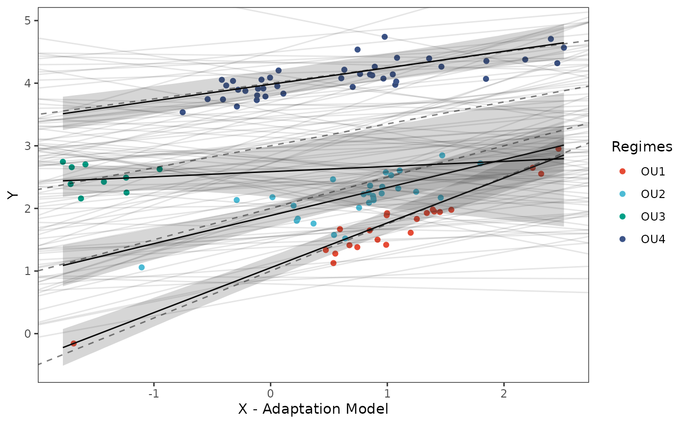 Posterior predicted means (black line) and 89% compatibility intervals (light grey region) are shown above for the optimal intercepts and slopes. Species values for each regime are shown in colored circles matching legend colors, with priors for intercept and slope shown in light grey lines. Dotted lines are true values of parameters.
Let’s combine all four plots into one plot
regression.plot<-regression.plot+ggplot2::theme(legend.position="none")
fig<-ggpubr::ggarrange(hl.plot, vy.plot,covariance.plot,regression.plot,ncol=2,nrow=2, labels = c("A)","B)","C)","D)"),common.legend = TRUE,legend="top")
#fig<-ggpubr::annotate_figure(fig,top=paste("Multi-Optima Adaptive Model - Varying Effects,\n hl=",hl,sep=""))
#ggplot2::ggsave("/Users/markgrabowski/Documents/Academic/Research/Current Projects/Blouch Project - SBR2/Blouch ms/R2/Figures/Fig2.pdf", plot = fig, width=7, height=7 )
fig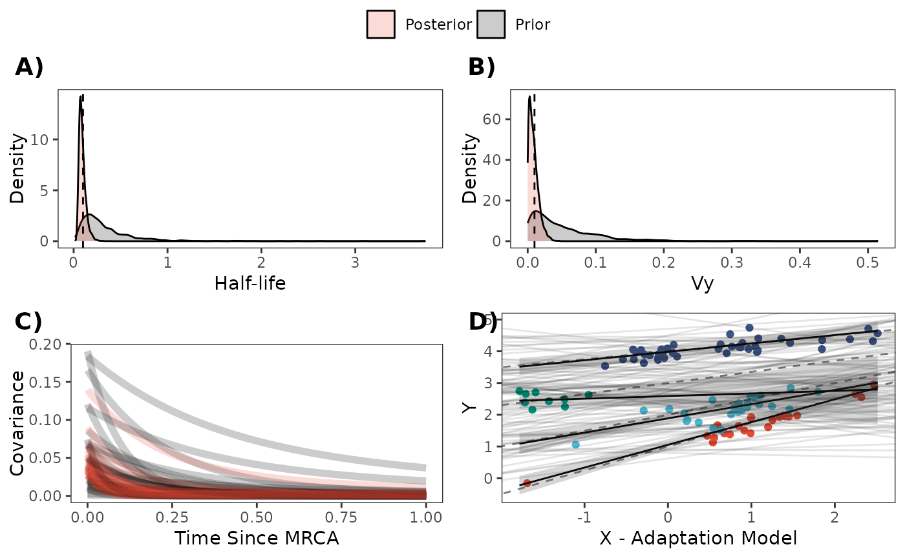
Model Comparison using PSIS
Lets do some model comparison using Pareto-Smoothed Importance Sampling (PSIS) from the R Package loo (Vehtari et al. 2023). loo estimates leave-one-out cross validation for Bayesian analyses. Here we are looking for Pareto k values below ~0.7, which suggest the results are accurate. The two species with consistently high Pareto shape values across the models are Daubentonia madagascariensis, the sole member of the distinct lemur family, and Tarsius bancanus, the only tarsier included in the phylogeny – both are distinct due to their long period of independent evolution (i.e. have long single branch on the phylogeny). This leads to it being hard to predict based on other species in the tree. PSIS also provides a way to look at outliers in our analysis.
We then compare the two models using the loo_compare function from the same package.
#Mlm varying effects model
loo_mlm_ve <- loo::loo(fit.reg.adapt.mlm.ve, save_psis = TRUE)
#> Warning: Some Pareto k diagnostic values are too high. See help('pareto-k-diagnostic') for details.
print(loo_mlm_ve)
#>
#> Computed from 4000 by 100 log-likelihood matrix.
#>
#> Estimate SE
#> elpd_loo 31.1 7.0
#> p_loo 5.5 1.4
#> looic -62.3 14.0
#> ------
#> MCSE of elpd_loo is NA.
#> MCSE and ESS estimates assume MCMC draws (r_eff in [0.5, 2.0]).
#>
#> Pareto k diagnostic values:
#> Count Pct. Min. ESS
#> (-Inf, 0.7] (good) 98 98.0% 1761
#> (0.7, 1] (bad) 2 2.0% <NA>
#> (1, Inf) (very bad) 0 0.0% <NA>
#> See help('pareto-k-diagnostic') for details.
plot(loo_mlm_ve) #4X6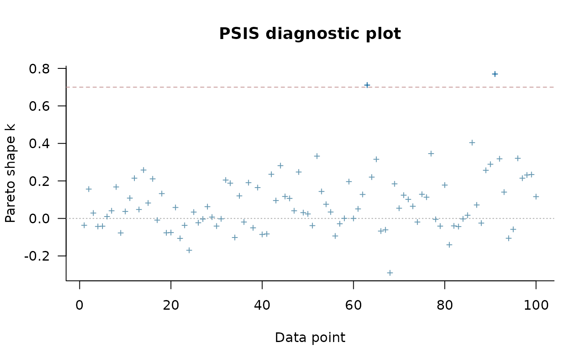
loo_mlm_ve.plot<-recordPlot()
#Varying effects model
loo_ve <- loo::loo(fit.reg.adapt.ve, save_psis = TRUE)
print(loo_ve)
#>
#> Computed from 4000 by 100 log-likelihood matrix.
#>
#> Estimate SE
#> elpd_loo 31.6 7.2
#> p_loo 5.3 1.4
#> looic -63.1 14.3
#> ------
#> MCSE of elpd_loo is 0.1.
#> MCSE and ESS estimates assume MCMC draws (r_eff in [0.6, 1.7]).
#>
#> All Pareto k estimates are good (k < 0.7).
#> See help('pareto-k-diagnostic') for details.
plot(loo_ve) #4X6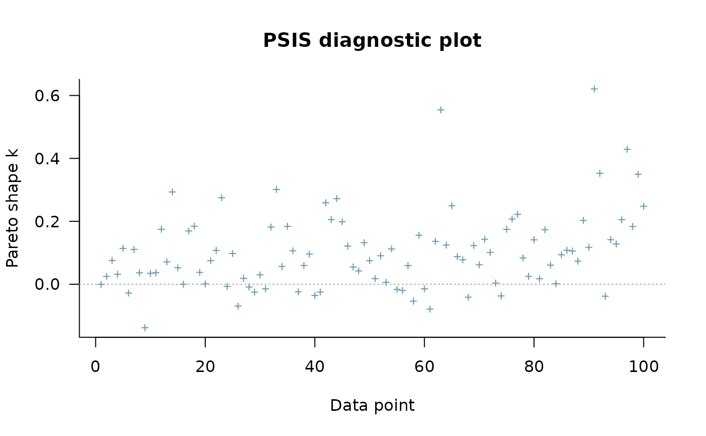
plot(loo_ve,label_points=TRUE) #Label outliers
loo_ve.plot<-recordPlot()
loo::loo_compare(loo_mlm_ve, loo_ve)
#> elpd_diff se_diff
#> model2 0.0 0.0
#> model1 -0.4 0.4
0.2 + c(-1,1)*0.6*1.86 #95% comparability interval of the difference, z-score of 1.86
#> [1] -0.916 1.316Let’s combine the two plots into one
#pdf(file="/Users/markgrabowski/Documents/Academic/Research/Current Projects/Blouch Project - SBR2/Blouch ms/R2/Figures/FigS4.pdf", width=12, height=4 )
cowplot::plot_grid(loo_mlm_ve.plot,loo_ve.plot,labels=c("A)","B)"))
#> Warning: Package `gridGraphics` is required to handle base-R plots.
#> Substituting empty plot.
#> Warning: Package `gridGraphics` is required to handle base-R plots.
#> Substituting empty plot.
#fig<-ggpubr::ggarrange(loo_mlm_ve.plot, loo_ve.plot,ncol=2,nrow=1, labels = c("A)","B)"),common.legend = TRUE,legend="top")
#fig<-ggpubr::annotate_figure(fig,top=paste("Multi-Optima Adaptive Model - Varying Effects,\n hl=",hl,sep=""))
#dev.off()These results suggest the models are indistinguishable - the standard error of the difference between the expected log pointwise predictive density (elpd) for the three models is as big or larger than the difference.
Model Comparison using Bayes Factors
Now lets compare our two models using Bayes Factors. Here we use the bridgesampling R package (Gronau et al. 2020). Looking below, we can read the results as the data is X times more likely under a model that assumes the first mode rather than second model.
#Bayes Factors
lml.fit.reg.adapt.mlm.ve<-bridgesampling::bridge_sampler(fit.reg.adapt.mlm.ve,silent=TRUE,maxiter=5000)
lml.fit.reg.adapt.ve<-bridgesampling::bridge_sampler(fit.reg.adapt.ve,silent=TRUE,maxiter=5000)
bridgesampling::bf(lml.fit.reg.adapt.ve,lml.fit.reg.adapt.mlm.ve)
#> Estimated Bayes factor in favor of lml.fit.reg.adapt.ve over lml.fit.reg.adapt.mlm.ve: 66.60532Here, the non-multilevel varying effects model is best supported compared to the multilevel version of the same model.
Trace for estimated parameters
Lets focus on the non-multilevel varying effects model as it had the best Pareto k values - none were >0.7 Let’s look at the traceplot, which givea a visualization of degree of chain convergence.
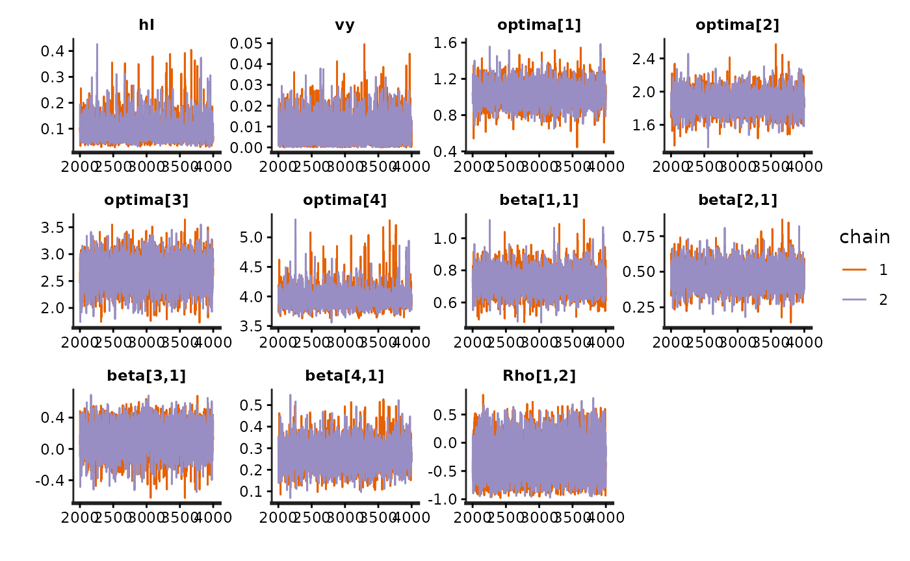
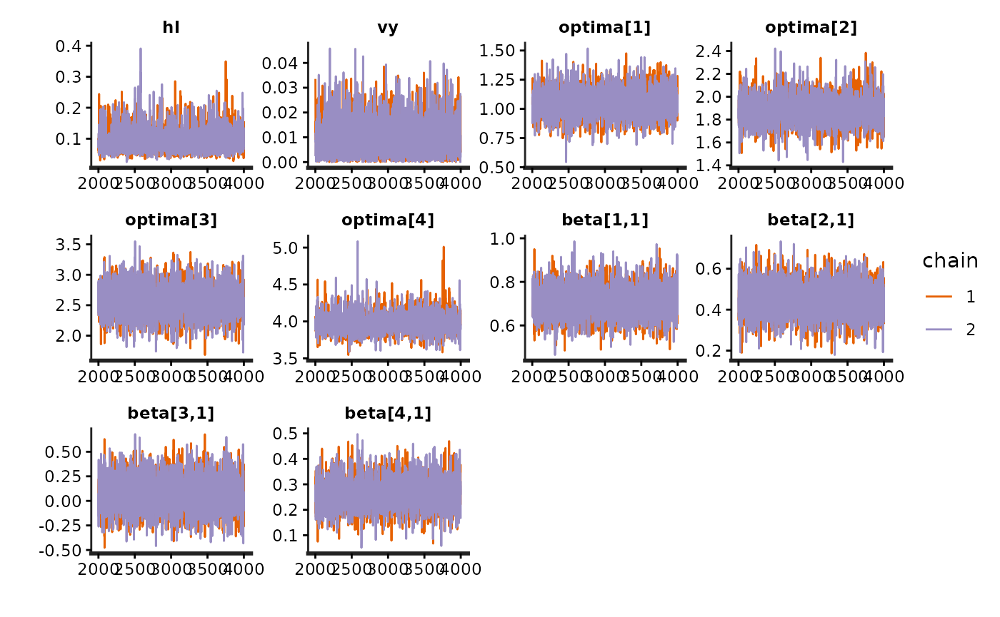
#plot.mlm<-rstan::traceplot(fit.reg.adapt.mlm.ve,pars = c("hl","vy","optima_bar","beta_bar","Rho","sigma","optima","beta"))
#plot.ve<-rstan::traceplot(fit.reg.adapt.ve,pars = c(c("hl","vy","optima","beta","beta_e")))
#fig<-ggpubr::ggarrange(plot.mlm, plot.ve,ncol=1,nrow=2, labels = c("A)","B)"),common.legend = TRUE,legend="top")
#fig<-ggpubr::annotate_figure(fig,top=paste("Multi-Optima Direct Effect - Varying Effects, hl=",hl,sep=""))
#ggplot2::ggsave("/Users/markgrabowski/Documents/Academic/Research/Current Projects/Blouch Project - SBR2/Blouch ms/R2/Figures/FigS2.pdf", plot = fig, width=9, height=7)
#figPredictive Checks
Now lets run prior and posterior predictive checks for our two models. Prior predictive checks generate predictions from the model using only the prior distributions in order to assess whether the priors are appropriate – they are equivalent to running the model without data (Gabry et al. 2019). Posterior predictive checks generate data according to the posterior predictive distribution and compare it to the observed data to assess the fit of the model (Gabry et al. 2019). Blouch includes Stan functions to run prior and posterior predictive checks for each of the included models and their use is demonstrated below in the simulation and empirical examples.
########################################################################################################
fit.reg.adapt.ve.priorpc<- rstan::sampling(object = blouch:::stanmodels$blouchOU_reg_adapt_ve_priorpc,data=dat,chains = 2,cores=2, iter =2000,algorithm=c("Fixed_param"))
#> Found more than one class "stanfit" in cache; using the first, from namespace 'rstan'
#> Also defined by 'rethinking'
#> Found more than one class "stanfit" in cache; using the first, from namespace 'rstan'
#> Also defined by 'rethinking'
post<-rstan::extract(fit.reg.adapt.ve.priorpc)
num.plots<-5
plots<-ysim.ppc.plot.code(dat,post,1:num.plots)
plots<-gridExtra::grid.arrange(grobs=plots, ncol=5, nrow=1,common.legend=TRUE,legend="top")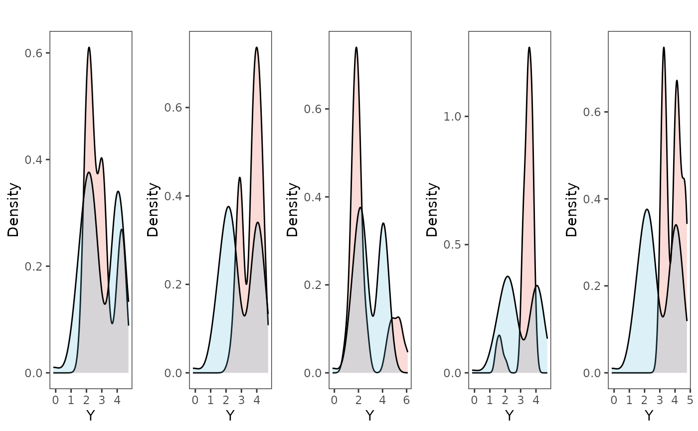
tgrob <- ggpubr::text_grob("Multi-Optima Adaptive Model - Varying Efects - Prior PC",size = 10)
plots.prior<-ggpubr::annotate_figure(plots,top=tgrob)
fit.reg.adapt.ve.postpc<- rstan::sampling(object = blouch:::stanmodels$blouchOU_reg_adapt_ve_postpc,data=dat,chains = 2,cores=2, iter =2000)
#> Found more than one class "stanfit" in cache; using the first, from namespace 'rstan'
#> Also defined by 'rethinking'
#> Found more than one class "stanfit" in cache; using the first, from namespace 'rstan'
#> Also defined by 'rethinking'
post<-rstan::extract(fit.reg.adapt.ve.postpc)
num.plots<-5
plots<-ysim.ppc.plot.code(dat,post,1:num.plots)
plots<-gridExtra::grid.arrange(grobs=plots, ncol=5, nrow=1,common.legend=TRUE,legend="top")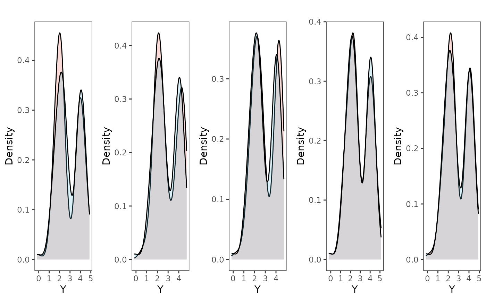
tgrob <- ggpubr::text_grob("Multi-Optima Adaptive Model - Varying Efects - Posterior PC",size = 10)
plots.post<-ggpubr::annotate_figure(plots,top=tgrob)
fig<-ggpubr::ggarrange(plots.prior, plots.post,ncol=1,nrow=2, labels = c("A)","B)"),common.legend = TRUE,legend="top")
#ggplot2::ggsave("/Users/markgrabowski/Documents/Academic/Research/Current Projects/Blouch Project - SBR2/Blouch ms/R2/Figures/FigS5.pdf", plot = fig, width=9, height=5)
#plot(post$Y_sim_obs[4,],dat$Y_obs)
plots.prior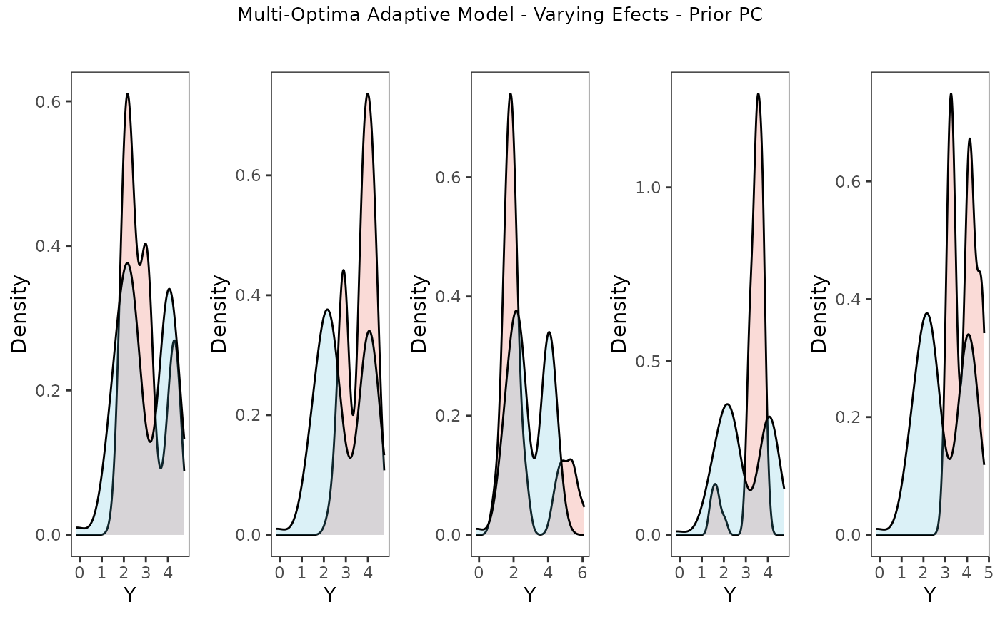
plots.post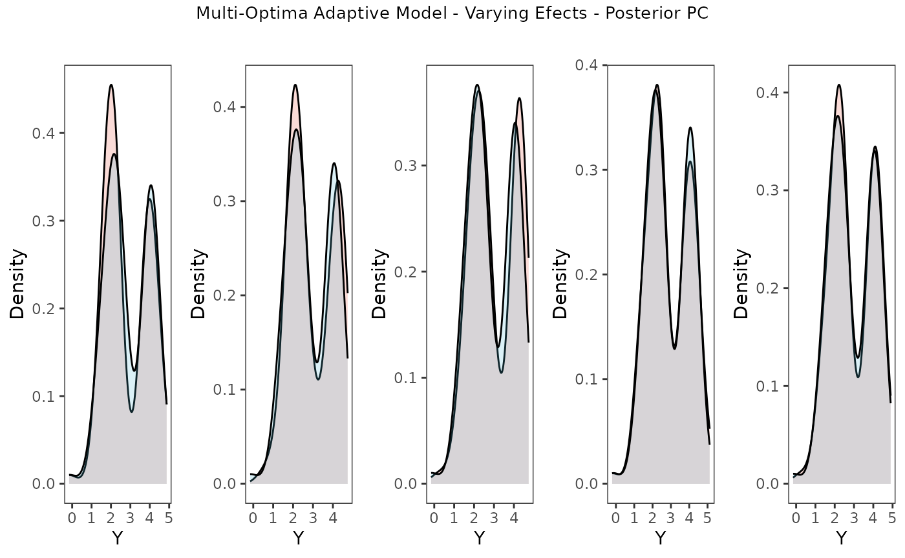
Posterior predictive checks show that the model is well fit as it generates data that are a close approximation of the true dataset.
References
Arnold, C., L. J. Matthews, and C. L. Nunn. 2010. The 10kTrees Website: A New Online Resource for Primate Phylogeny. Evolutionary Anthropology 19:114-118.
Gabry J., Simpson D., Vehtari A., Betancourt M., Gelman A. 2019. Visualization in Bayesian workflow. Journal of the Royal Statistical Society: Series A (Statistics in Society). 182:389–402.
Gronau Q.F., Singmann H., Wagenmakers E.-J. 2020. bridgesampling: An R Package for Estimating Normalizing Constants. Journal of Statistical Software. 92:1–29.
Hansen T.F. 1997. Stabilizing Selection and the Comparative Analysis of Adaptation. Evolution. 51:1341–1351.
McElreath R. 2020. Statistical rethinking: A Bayesian course with examples in R and Stan. CRC press.
Paradis E., Claude J., Strimmer K. 2004. APE: Analyses of Phylogenetics and Evolution in R language. Bioinformatics. 20:289–290.
Revell L.J. 2011. phytools: an R package for phylogenetic comparative biology (and other things). Methods Ecol. Evol. 3:217–223.
Uyeda J.C., Harmon L.J. 2014. A Novel Bayesian Method for Inferring and Interpreting the Dynamics of Adaptive Landscapes from Phylogenetic Comparative Data. Systematic Biology. 63:902–918.
Vehtari A., Gabry J., Magnusson M., Yao Y., Bürkner P.-C., Paananen T., Gelman A. 2023. loo: Efficient leave-one-out cross-validation and WAIC for Bayesian models.